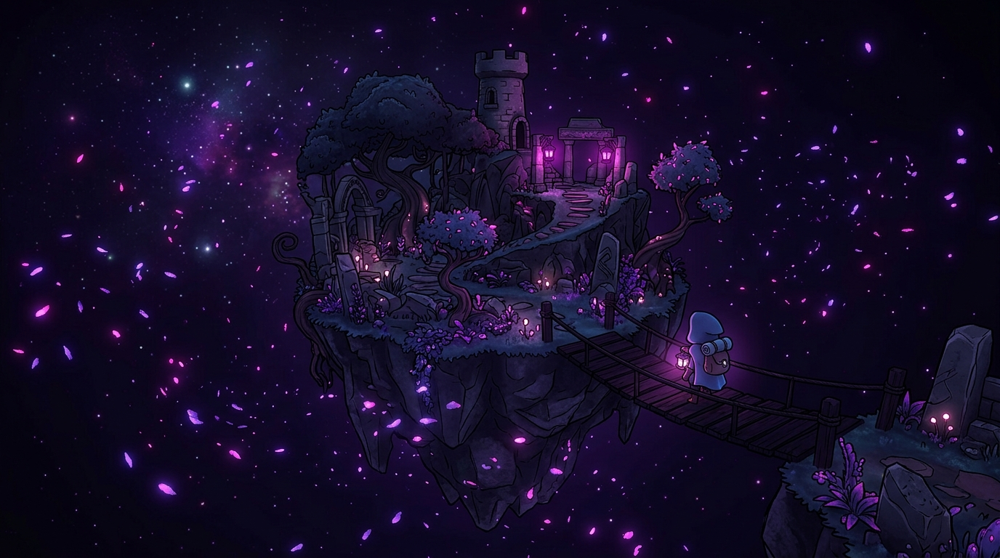
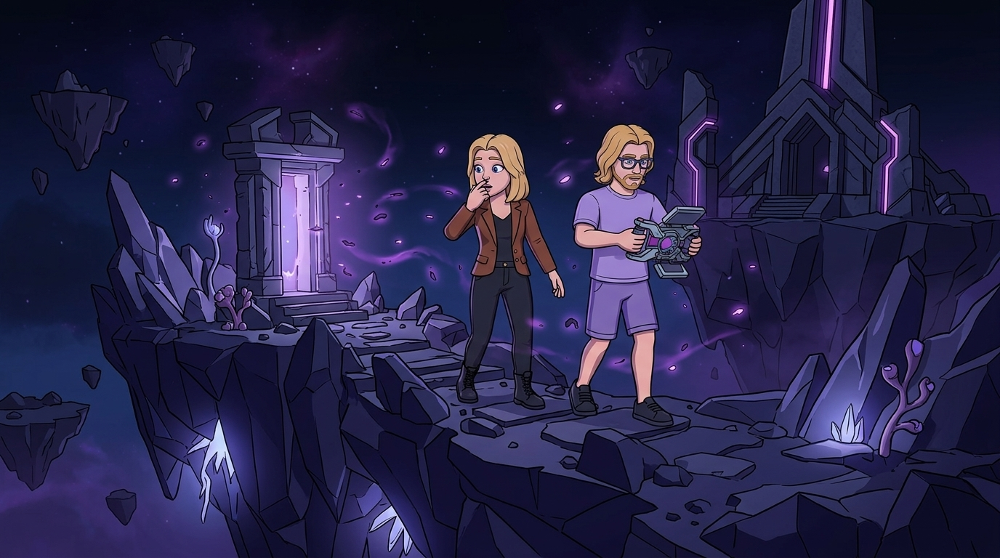

Studio Indépendant de Jeux Vidéo
Nous concevons et produisons nos propres jeux vidéo avec une philosophie radicale : des gameplays audacieux, une liberté créative totale, et des expériences ludiques inoubliables.
Prendre des risques, innover
Dans une industrie souvent formatée, nous croyons que l'indépendance est notre plus grande force. Nous n'avons pas d'identité graphique figée : chaque projet dicte sa propre direction artistique (pixel art, low-poly, réalisme) pour servir au mieux son univers.
- Game Design Centré Joueur : Des mécaniques profondes et gratifiantes, pensées pour offrir un vrai challenge.
- Liberté Créative : Des thèmes narratifs sombres, matures ou oniriques qui sortent des sentiers battus.
- Savoir-faire Technique : Maîtrise des moteurs 3D modernes (Unity) pour des performances fluides.

Projet Actuel : Spark of Remains
Plongez au cœur des cendres d'un monde oublié. Spark of Remains est un jeu d'aventure coopératif en cours de développement, axé sur l'exploration asymétrique et la résolution d'énigmes exigeantes.
Incarnez Djason et Maëly, explorez la Dimension des Souvenirs et synchronisez vos capacités pour survivre.

Questions Fréquentes (F.A.Q)
Spark of Remains est notre premier grand projet interne. C'est un jeu en cours de développement, axé sur l'exploration, des mécaniques exigeantes et une ambiance sombre et mystérieuse.
Nous utilisons principalement Unity (C#) pour nos productions internes, car il offre une excellente flexibilité pour iterer rapidement sur nos concepts de gameplays audacieux.
Oui. Bien que le Game Studio se concentre sur nos créations originales, notre pôle LABS propose de développer des prototypes de jeux ou des applications ludo-éducatives (Serious Games) pour les entreprises.